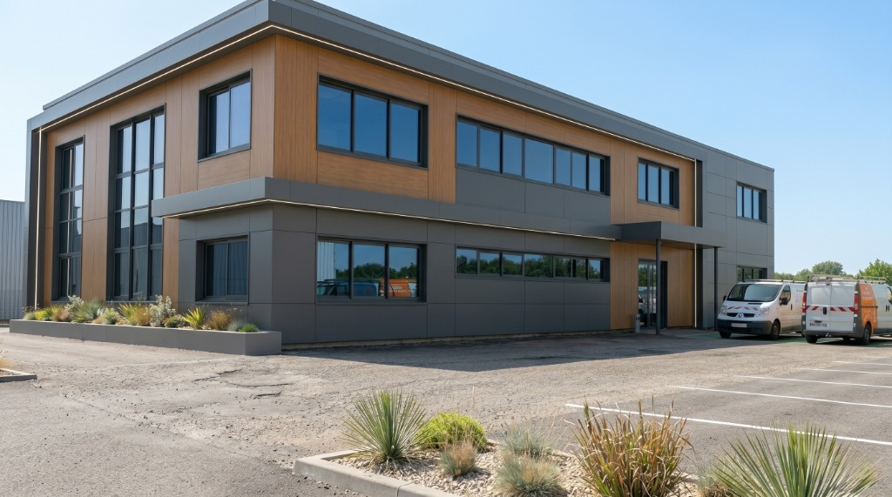
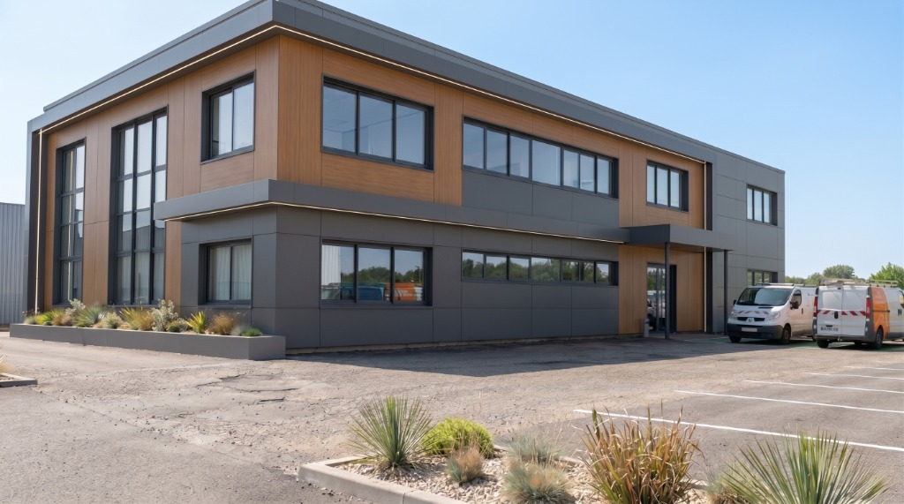

Un bâtiment moderne exposé au soleil subit de forts apports thermiques. Ce chantier montre comment équiper l'intégralité des façades vitrées pour réduire l'éblouissement, bloquer la chaleur et uniformiser le design extérieur.


Ce bâtiment d'entreprise très récent arbore de grands bandeaux vitrés sur ses deux niveaux. Bien qu'esthétique, cette grande surface vitrée laissait entrer énormément de chaleur l'été et provoquait un éblouissement constant sur les écrans des collaborateurs à l'étage comme au rez-de-chaussée.
Nous avons opté pour un film de contrôle solaire teinté posé par l'extérieur. La pose extérieure est redoutablement efficace car elle stoppe l'énergie solaire avant même qu'elle ne traverse le double vitrage. De plus, sa teinte sombre et réfléchissante uniformise la façade et masque les stores intérieurs, donnant un aspect beaucoup plus "premium" au bâtiment.
L'intervention s'est étalée sur 3 jours à l'aide de nacelles pour atteindre le premier étage. Aucune gêne n'a été occasionnée pour les employés travaillant à l'intérieur puisque l'intégralité de la pose et de la logistique s'est faite depuis le parking extérieur.
Traiter toutes les façades vitrées d'un siège social permet d'homogénéiser la température dans tous les bureaux, de réduire significativement la facture de climatisation l'été, et de moderniser l'apparence extérieure de l'entreprise d'un seul coup.
Voici pourquoi des commerçants en Auvergne-Rhône-Alpes nous font confiance.